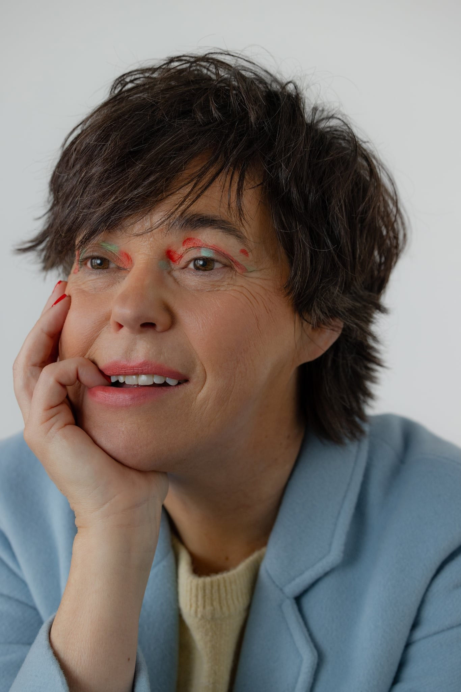

Ceramics
Original objects, sculptural forms and symbols of everyday life.
View artworksArt that engages with life.

Nomeda Marčėnaitė creates ceramics, sculpture and paintings, takes part in exhibitions, leads creative workshops and hosts events.
Her work brings together everyday objects, human stories, irony and sensitivity. An artwork can become a story, a question or an unexpected encounter.
This is an editorial introduction. A detailed CV and verified biographical information will be added later.
Original objects, sculptural forms and symbols of everyday life.
View artworksVisual narratives and a world of colour.
Art archiveWorkshops, conversations and creativity in action.
Discover workshopsPublication archive entry. Bibliographic details are being verified.
Publication archive entry. Bibliographic details are being verified.